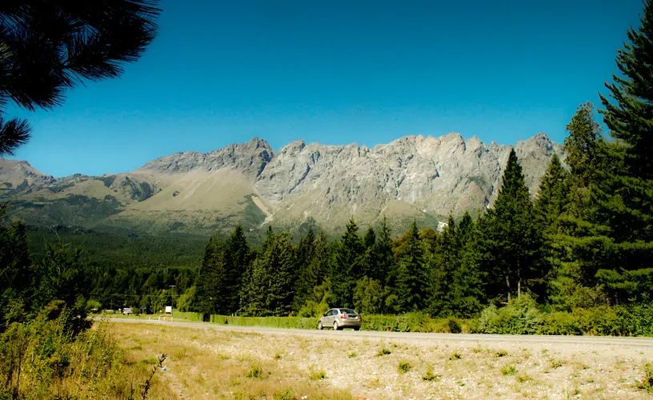
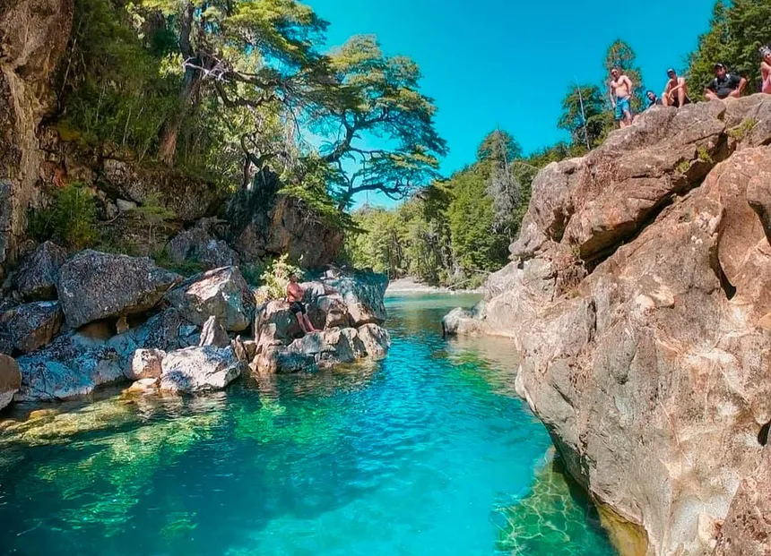
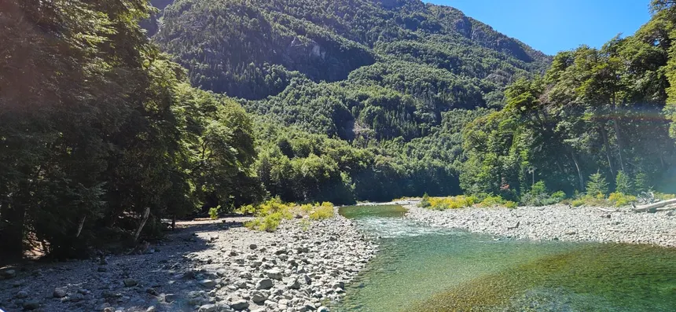
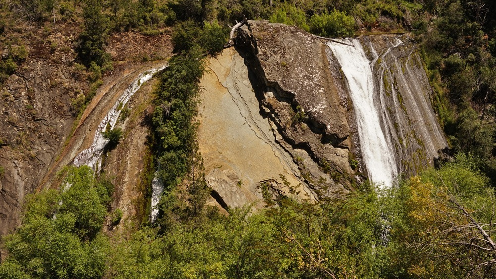
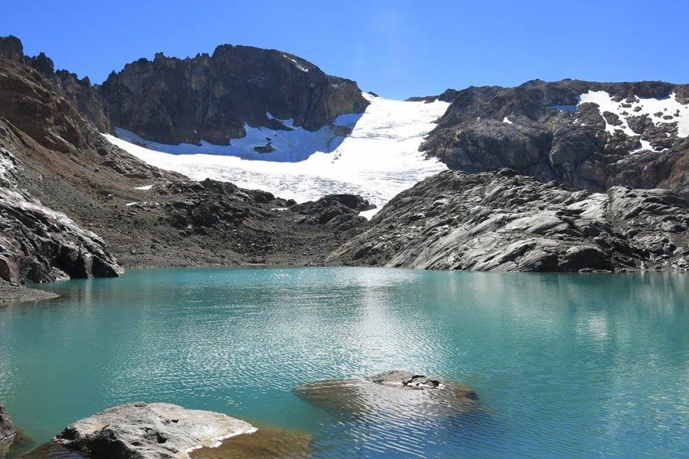
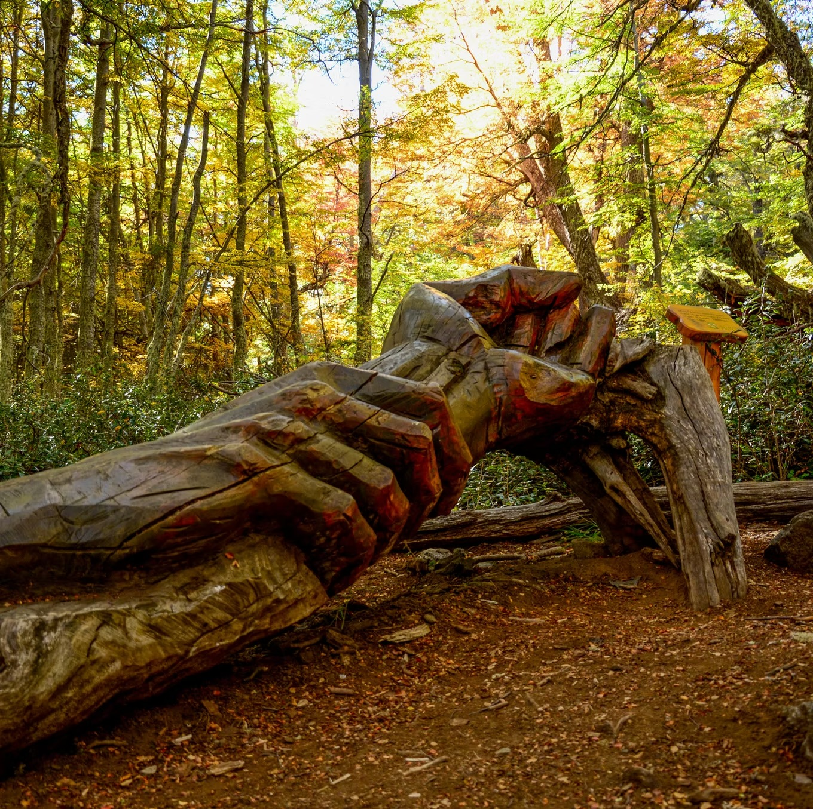

Principales lugares de interés
Cerro Piltriquitrón
es uno de los principales atractivos
naturales de la zona. Se caracteriza por sus paisajes montañosos, sus bosques
y las vistas panorámicas de los alrededores. Su presencia forma parte del
paisaje característico de El Bolsón y permite apreciar la combinación entre
la ciudad, el valle cordillerano y las montañas que rodean la región.
El entorno del cerro se destaca por su naturaleza y por la posibilidad de
disfrutar de diferentes paisajes a medida que se recorren sus alrededores.
Ubicación: El Cerro Piltriquitrón se encuentra en las
cercanías de la localidad de El Bolsón, en la provincia de Río Negro.
La ciudad está ubicada en un valle de la Cordillera de los Andes y el
cerro se encuentra hacia el este, formando parte del paisaje que rodea
a la localidad. Debido a su cercanía con El Bolsón, es uno de los puntos
naturales más reconocibles de la zona y puede apreciarse desde diferentes
sectores de la ciudad y sus alrededores.
¿Qué se puede hacer? En el Cerro Piltriquitrón y sus
alrededores se pueden realizar actividades relacionadas con el turismo
de naturaleza. Entre las principales propuestas se encuentran las
caminatas, el senderismo y los recorridos por los paisajes de montaña.
También es posible detenerse en diferentes puntos para observar el
paisaje, sacar fotografías y disfrutar de la tranquilidad del entorno.
Para quienes buscan una actividad más aventurera, la zona también está
vinculada con actividades de montaña y turismo al aire libre.
- Realizar caminatas y senderismo.
- Recorrer los bosques y paisajes de montaña.
- Disfrutar de vistas panorámicas de El Bolsón y sus alrededores.
- Sacar fotografías de los paisajes naturales.
- Realizar actividades de turismo aventura.
- Disfrutar de la naturaleza y del aire libre.
¿Por qué visitarlo? El Cerro Piltriquitrón es muy recomendado
para visitar porque permite conocer uno de los paisajes naturales más representativos
de El Bolsón. Es una buena opción para quienes quieren alejarse de los
espacios urbanos y pasar tiempo en contacto con la naturaleza. Sus
montañas, bosques y vistas permiten disfrutar de un entorno diferente
y conocer mejor las características naturales de la región.
Además, visitar el cerro ofrece la posibilidad de realizar una actividad
al aire libre mientras se observan los paisajes que rodean a El Bolsón.
Por su combinación de naturaleza, montaña y vistas panorámicas, es un
lugar que puede resultar atractivo tanto para quienes disfrutan de las
caminatas como para quienes simplemente buscan conocer y fotografiar
los paisajes de la zona.

Cajón del Azul
es uno de los principales atractivos
naturales de la zona de El Bolsón. Se destaca por sus aguas cristalinas,
sus llamativos tonos azulados y el paisaje de bosques y montañas que lo
rodea. El lugar forma parte de un entorno natural muy particular, donde
el río atraviesa sectores de gran belleza y crea diferentes paisajes
a lo largo de su recorrido.
Una de las características más llamativas del Cajón del Azul son sus
pozones de agua de color turquesa, que se encuentran rodeados por
vegetación, rocas y bosques. El contraste entre el agua, las montañas
y la vegetación hace que el lugar sea uno de los paisajes más
reconocidos de la región. Además, el entorno permite observar
diferentes ambientes naturales mientras se avanza por los senderos.
Ubicación: El Cajón del Azul se encuentra en los
alrededores de El Bolsón, en la provincia de Río Negro, dentro del
Área Natural Protegida Río Azul - Lago Escondido. Está ubicado hacia
el oeste de la localidad, en un sector cordillerano rodeado de
bosques, ríos, arroyos y montañas. Para llegar hasta el lugar es
necesario realizar parte del recorrido a pie por los senderos de la
zona.
¿Qué se puede hacer? El Cajón del Azul es especialmente
conocido por las actividades relacionadas con el senderismo y el
trekking. Los visitantes pueden recorrer los distintos caminos,
observar los paisajes, acercarse a los sectores del río y disfrutar
de los bosques que forman parte del recorrido. También es un lugar
muy atractivo para sacar fotografías debido a los colores del agua
y a los paisajes naturales que se encuentran durante la caminata.
- Realizar senderismo y trekking.
- Recorrer los senderos de la zona.
- Observar los pozones de agua turquesa.
- Disfrutar de los bosques y paisajes cordilleranos.
- Sacar fotografías de los paisajes y del río.
- Disfrutar de una jornada en contacto con la naturaleza.
¿Por qué visitarlo? El Cajón del Azul es recomendable
para quienes buscan conocer un paisaje natural diferente y disfrutar
de una experiencia relacionada con la montaña y el senderismo. La
combinación de agua cristalina, bosques, rocas y montañas hace que
cada parte del recorrido tenga un paisaje particular.
Además, recorrer el Cajón del Azul permite conocer una de las zonas
naturales más representativas de los alrededores de El Bolsón. Es una
buena opción para quienes disfrutan de las caminatas, la fotografía
y los lugares tranquilos alejados de las zonas urbanas. La variedad
de paisajes que se encuentran durante el recorrido hace que la visita
sea una experiencia diferente a la de otros atractivos de la región.

Río Azul
Río Azul es uno de los atractivos naturales más
importantes de los alrededores de El Bolsón. Su nombre se relaciona
con el color de sus aguas, que en diferentes sectores pueden presentar
tonalidades azules y turquesas. El río atraviesa un entorno rodeado de
bosques, montañas y vegetación, formando un paisaje característico de
la región cordillerana.
A lo largo de su recorrido, Río Azul ofrece diferentes paisajes
naturales. En algunos sectores se pueden observar aguas tranquilas,
mientras que en otros el río atraviesa zonas de rocas y desniveles.
La combinación del agua con los bosques y las montañas que rodean la
zona crea un ambiente muy atractivo para quienes disfrutan de la
naturaleza y de los espacios al aire libre.
Ubicación: El Río Azul se encuentra en los alrededores
de El Bolsón, en la provincia de Río Negro. Su recorrido atraviesa
diferentes sectores naturales de la región y se encuentra relacionado
con el Área Natural Protegida Río Azul - Lago Escondido. Debido a su
extensión, existen distintos lugares desde los cuales se puede
conocer y disfrutar de sus paisajes.
¿Qué se puede hacer? En los alrededores del Río Azul
se pueden realizar diferentes actividades relacionadas con el turismo
y la naturaleza. Es posible recorrer senderos, caminar junto al río,
observar el paisaje y disfrutar de los espacios naturales. También
resulta un lugar interesante para la fotografía, ya que el agua, los
bosques y las montañas ofrecen diferentes escenarios para observar
durante el recorrido.
- Caminar y recorrer los senderos cercanos al río.
- Disfrutar de los paisajes naturales.
- Observar las aguas y los diferentes sectores del río.
- Sacar fotografías del paisaje.
- Recorrer los bosques y alrededores.
- Disfrutar de actividades al aire libre.
¿Por qué visitarlo? El Río Azul es recomendable para
quienes quieren conocer uno de los ambientes naturales más
representativos de la zona de El Bolsón. Su recorrido permite
disfrutar de un paisaje en el que se combinan el agua, los bosques
y las montañas, ofreciendo una experiencia diferente a la de los
espacios urbanos.
Además, visitar los alrededores del Río Azul permite disfrutar de un
ambiente tranquilo y conectarse con la naturaleza. Es una buena
alternativa para quienes buscan caminar, observar paisajes, sacar
fotografías o simplemente pasar un tiempo al aire libre. Por sus
características naturales y por su importancia dentro del paisaje
de la región, el Río Azul es uno de los lugares que vale la pena
conocer durante una visita a El Bolsón.

Cascada Escondida
La Cascada Escondida es uno de los principales atractivos
naturales de la zona. Se caracteriza por su caída de agua
de unos 30 metros de altura y por el entorno de bosque nativo
que la rodea, lo que genera un paisaje húmedo y frondoso muy
particular dentro de los alrededores de El Bolsón.
El recorrido hasta la cascada permite disfrutar de un sendero
rodeado de vegetación, arroyos y distintos rincones naturales.
A medida que se avanza, el sonido del agua y la humedad del
bosque acompañan la caminata hasta llegar al punto donde se
puede observar la caída completa.
Ubicación: La Cascada Escondida se encuentra
en los alrededores de El Bolsón, en la provincia de Río Negro.
Se accede a través de senderos naturales que atraviesan sectores
de bosque, por lo que para llegar hasta el lugar es necesario
recorrer parte del camino a pie.
¿Qué se puede hacer? En la Cascada Escondida y
sus alrededores se pueden realizar actividades vinculadas al
trekking y al senderismo. Es posible recorrer el sendero,
observar el entorno natural y disfrutar de la caída de agua
desde diferentes puntos del recorrido, además de aprovechar
el lugar para sacar fotografías.
- Realizar trekking y senderismo.
- Recorrer los senderos de bosque nativo.
- Observar la caída de agua de cerca.
- Sacar fotografías del entorno natural.
- Disfrutar de una caminata corta y familiar.
- Disfrutar de la naturaleza y del aire libre.
¿Por qué visitarlo? La Cascada Escondida es
muy recomendada para quienes buscan una salida de naturaleza
accesible, ya que se trata de una caminata corta y apta para
toda la familia. Es una buena opción para conocer uno de los
paisajes naturales característicos de los alrededores de
El Bolsón sin necesidad de recorridos muy exigentes.
Además, visitar la Cascada Escondida permite disfrutar de un
entorno tranquilo, alejado de las zonas urbanas, en contacto
directo con el bosque y el agua. Por su fácil acceso y su
paisaje particular, es uno de los atractivos naturales que
suele recomendarse a quienes visitan la zona por primera vez.

Glaciar del Hielo Azul
El Glaciar del Hielo Azul es uno de los atractivos naturales
más destacados de la zona de El Bolsón. Se caracteriza por
sus paisajes montañosos, su imponente glaciar y las vistas
que se obtienen a lo largo de todo el ascenso hacia la
cordillera.
El recorrido hacia el glaciar atraviesa distintos ambientes
de montaña, desde bosques cordilleranos hasta sectores de
altura con roca y hielo. Esta variedad de paisajes convierte
al trayecto en una experiencia en sí misma, además del propio
atractivo de llegar al glaciar.
Ubicación: El Glaciar del Hielo Azul se
encuentra a unos 1800 metros de altura, en la zona del Cerro
Hielo Azul, en los alrededores de El Bolsón, provincia de
Río Negro. Debido a su altura y ubicación cordillerana, el
acceso se realiza a través de un extenso recorrido de montaña.
¿Qué se puede hacer? En el Glaciar del Hielo
Azul y sus alrededores se pueden realizar actividades de
trekking de montaña. Es posible recorrer senderos, atravesar
distintos ambientes cordilleranos y disfrutar del paisaje que
ofrece el glaciar y sus alrededores, además de aprovechar el
recorrido para sacar fotografías del entorno.
- Realizar trekking de montaña.
- Recorrer senderos cordilleranos.
- Observar el glaciar y sus alrededores.
- Disfrutar de las vistas panorámicas de altura.
- Sacar fotografías del paisaje de montaña.
- Realizar una excursión de montaña más exigente.
¿Por qué visitarlo? El Glaciar del Hielo Azul
es recomendado para quienes buscan una experiencia de montaña
más exigente y quieren conocer uno de los paisajes cordilleranos
más representativos de la región. Su altura y su entorno natural
lo convierten en un destino atractivo para los amantes del
trekking.
Además, ascender hacia el Glaciar del Hielo Azul permite
disfrutar de un recorrido variado, con distintos ambientes de
montaña y vistas que cambian a medida que se gana altura. Por
su exigencia y su paisaje, es una de las excursiones más
valoradas por quienes visitan los alrededores de El Bolsón.

Bosque Tallado
El Bosque Tallado es uno de los atractivos culturales y
naturales más particulares de la zona de El Bolsón. Se trata
de un museo a cielo abierto ubicado en la ladera del Cerro
Piltriquitrón, donde troncos de lengas que sobrevivieron a
antiguos incendios fueron transformados en esculturas de
madera por artistas locales y de otras partes del mundo.
El origen del lugar se remonta a los incendios que afectaron
la zona entre 1978 y 1982, que dejaron un bosque de lengas
muertas en pie. A partir de 1998, por iniciativa de un grupo
de escultores, esos troncos comenzaron a tallarse en distintos
encuentros, dando lugar a un recorrido con decenas de obras
repartidas entre los árboles.
Ubicación: El Bosque Tallado se encuentra en
la ladera del Cerro Piltriquitrón, a pocos kilómetros de El
Bolsón, en la provincia de Río Negro. Para llegar es necesario
tomar el camino de montaña que conduce hacia la plataforma del
cerro y luego continuar a pie por un sendero hasta el predio
donde se ubican las esculturas.
¿Qué se puede hacer? En el Bosque Tallado se
puede recorrer el sendero que conecta las distintas esculturas,
observar las tallas realizadas sobre los troncos y disfrutar
del entorno de montaña que rodea al lugar. También es un sitio
ideal para la fotografía, dada la combinación entre el arte y
el paisaje natural.
- Recorrer el sendero de esculturas talladas.
- Realizar una caminata de montaña de dificultad media.
- Observar las obras de arte hechas en madera.
- Disfrutar de vistas panorámicas del valle de El Bolsón.
- Sacar fotografías del bosque y las esculturas.
- Conocer un espacio cultural único en la región.
¿Por qué visitarlo? El Bosque Tallado es muy
recomendado para quienes quieren conocer un atractivo diferente,
que combina arte, naturaleza y montaña. Es una buena opción
para quienes disfrutan tanto del trekking como de recorrer
propuestas culturales poco convencionales.
Además, visitar el Bosque Tallado permite conocer cómo un
bosque afectado por el fuego se transformó, con el tiempo,
en un espacio artístico reconocido en toda la región. Por su
historia, sus esculturas y las vistas que se obtienen durante
el ascenso, es uno de los paseos más recomendados a quienes
visitan El Bolsón.
